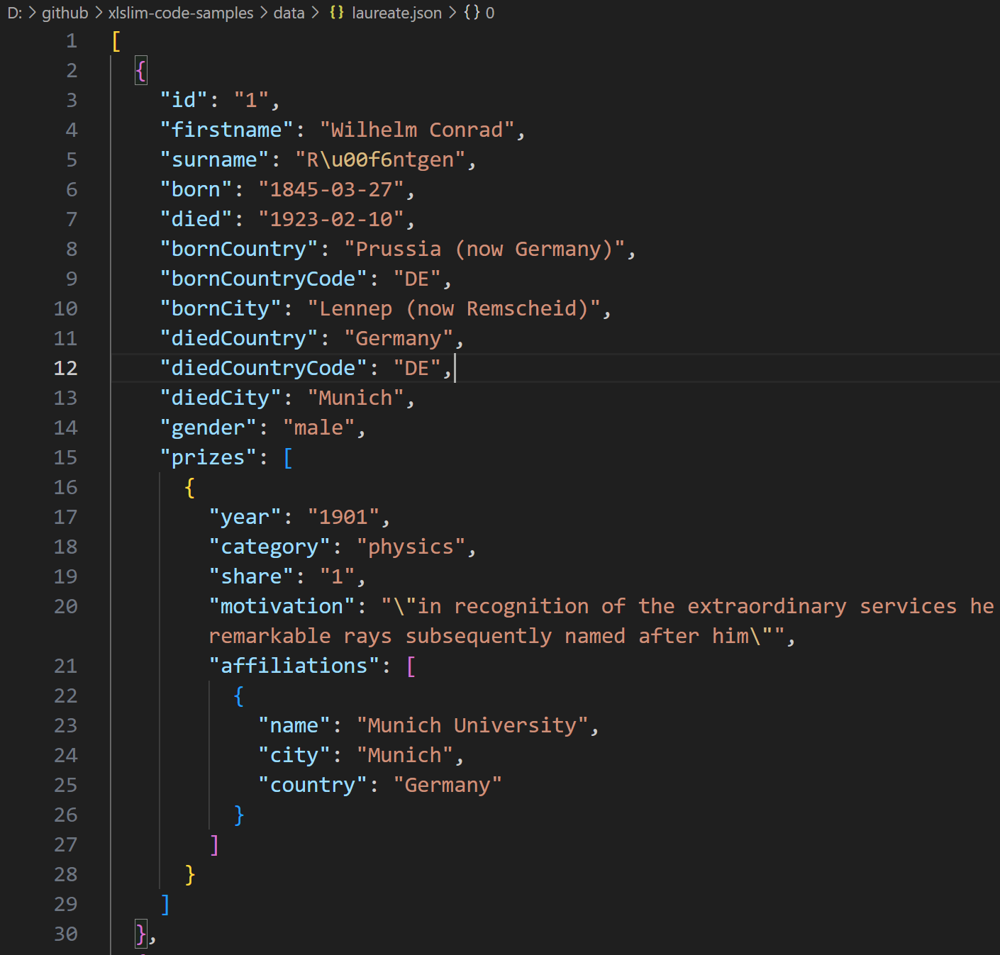

DuckDB¶
DuckDB is a powerful analytical database that allows you to easily import and analyse large datasets. DuckDB fully supports SQL with many improvements to make SQL friendlier.
xlSlim includes a complete in-process DuckDB which allows DuckDB SQL statements to be run within either an in-memory or on-disk database. DuckDB can read data from many common file formats, such as JSON, Parquet and CSV. Additionally DuckDB has functionality to directly query data located on https and in AWS S3.
Warning
DuckDB requires a premium licence. See Licensing
Reading JSON files¶
Reading data from JSON files can be difficult, particularly if the data is nested.
This JSON file contains details of Nobel prize laureates:
{kind=link}
The data is presented as a list of dictionaries with the prizes field being a further list of dictionaries.
DuckDB allows the laureates names and birth countries to be extracted with a simple SQL SELECT. Notice how DuckDB allows the JSON file to be treated just like a regular database table:
SELECT firstname, surname, bornCountry FROM 'laureate.json' LIMIT 5
Passing the SQL into the DuckDbQuery() function gives the following result:
{kind=link}
We can now easily find the countries with the most Nobel prize winners:
SELECT bornCountry AS Country, COUNT(*) AS Number FROM 'laureate.json' GROUP BY bornCountry ORDER BY COUNT(*) DESC LIMIT 5
{kind=link}
DuckDB supports the use of JSONPath to extract values from nested JSON fields. This allows us to extract the category and motivation of the first prize awarded to each person.
SELECT firstname, surname, prizes->>'$[0].category' AS Category, prizes->>'$[0].motivation'AS Motivation FROM 'laureate.json' LIMIT 5
{kind=link}
Note
All the Excel files shown are available from github in the xlslim-code-samples repo. I highly recommend downloading the samples from github. The Excel workbooks contain many tips and tricks.